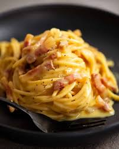

Cabonara
Ingredients
- Spaghetti
- Parmegianno
- egg
- pepper
- guiancale
Directions
- First fry the guiancale on medium high heat. There is no need for oil because the fat from the pork will be enough
- next you're going to boil the spaghetti
- after the spaghetti is done and the guiancale is cooked mix the noodles in the fat and meat
- shred parmesan and mix with raw egg, stir the sauce mixture in with the noodles and meat and voila

Back to home